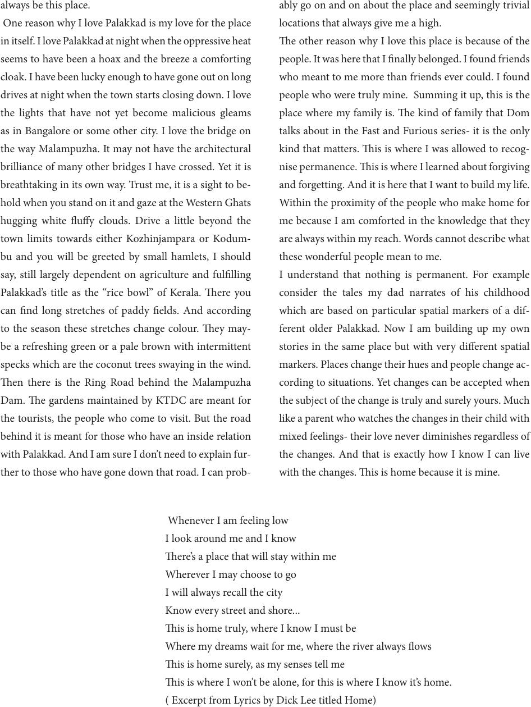

always be this place.
One reason why I love Palakkad is my love for the place
in itself. I love Palakkad at night when the oppressive heat
seems to have been a hoax and the breeze a comforting
cloak. I have been lucky enough to have gone out on long
drives at night when the town starts closing down. I love
the lights that have not yet become malicious gleams
as in Bangalore or some other city. I love the bridge on
the way Malampuzha. It may not have the architectural
brilliance of many other bridges I have crossed. Yet it is
breathtaking in its own way. Trust me, it is a sight to be-
hold when you stand on it and gaze at the Western Ghats
hugging white uy clouds. Drive a little beyond the
town limits towards either Kozhinjampara or Kodum-
bu and you will be greeted by small hamlets, I should
say, still largely dependent on agriculture and fullling
Palakkad’s title as the “rice bowl” of Kerala. ere you
can nd long stretches of paddy elds. And according
to the season these stretches change colour. ey may-
be a refreshing green or a pale brown with intermittent
specks which are the coconut trees swaying in the wind.
en there is the Ring Road behind the Malampuzha
Dam. e gardens maintained by KTDC are meant for
the tourists, the people who come to visit. But the road
behind it is meant for those who have an inside relation
with Palakkad. And I am sure I don’t need to explain fur-
ther to those who have gone down that road. I can prob-
ably go on and on about the place and seemingly trivial
locations that always give me a high.
e other reason why I love this place is because of the
people. It was here that I nally belonged. I found friends
who meant to me more than friends ever could. I found
people who were truly mine. Summing it up, this is the
place where my family is. e kind of family that Dom
talks about in the Fast and Furious series- it is the only
kind that matters. is is where I was allowed to recog-
nise permanence. is is where I learned about forgiving
and forgetting. And it is here that I want to build my life.
Within the proximity of the people who make home for
me because I am comforted in the knowledge that they
are always within my reach. Words cannot describe what
these wonderful people mean to me.
I understand that nothing is permanent. For example
consider the tales my dad narrates of his childhood
which are based on particular spatial markers of a dif-
ferent older Palakkad. Now I am building up my own
stories in the same place but with very dierent spatial
markers. Places change their hues and people change ac-
cording to situations. Yet changes can be accepted when
the subject of the change is truly and surely yours. Much
like a parent who watches the changes in their child with
mixed feelings- their love never diminishes regardless of
the changes. And that is exactly how I know I can live
with the changes. is is home because it is mine.
Whenever I am feeling low
I look around me and I know
ere’s a place that will stay within me
Wherever I may choose to go
I will always recall the city
Know every street and shore...
is is home truly, where I know I must be
Where my dreams wait for me, where the river always ows
is is home surely, as my senses tell me
is is where I won’t be alone, for this is where I know it’s home.
( Excerpt from Lyrics by Dick Lee titled Home)